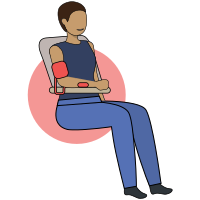

Vía Clínica HEARTS
Protocolo de atención de hipertensión arterial
Lectura precisa de la presión arterial

*Si disponibles, utilizar dispositivos automáticos validados para el brazo
Riesgo cardiovascular (RCV)
Estimar a partir de los 40 años
Con Enfermedad CV establecida: Aspirina + Rosuvastatina 20 mg por día
Sin Enfermedad CV establecida: Rosuvastatina 10 mg por día (independiente del valor de colesterol)
Diagnóstico de HTA: Mayor o igual a 140/90 mmHg confirmada en 2 visitas
Metas de presión arterial:
< 140/90 mmHg
En pacientes de alto riesgo CV: Presión arterial Sistólica ≤ 130
Protocolo de tratamiento
Iniciar tratamiento farmacológico inmediatamente si el/la paciente sigue fuera de meta luego de 4 semanas, proceder al paso siguiente
Información Adicional
- Valorar adherencia previo a intensificar el tratamiento
- Evaluar indicación de beta-bloqueantes en personas con enfermedad coronaria establecida, o combinar IECA y ARA II
- Valorar indicación de IFGe, albuminuria, ECG
- No aplicar este algoritmo en embarazadas ni mujeres en edad fértil
Modificaciones del estilo de vida
Derivación oportuna
- HTA refractaria: Refractariedad al tratamiento con 3 o más drogas
- Desarrollo enfermedad vascular (coronaria, cerebral o periférica)
- Sospecha de HTA secundaria